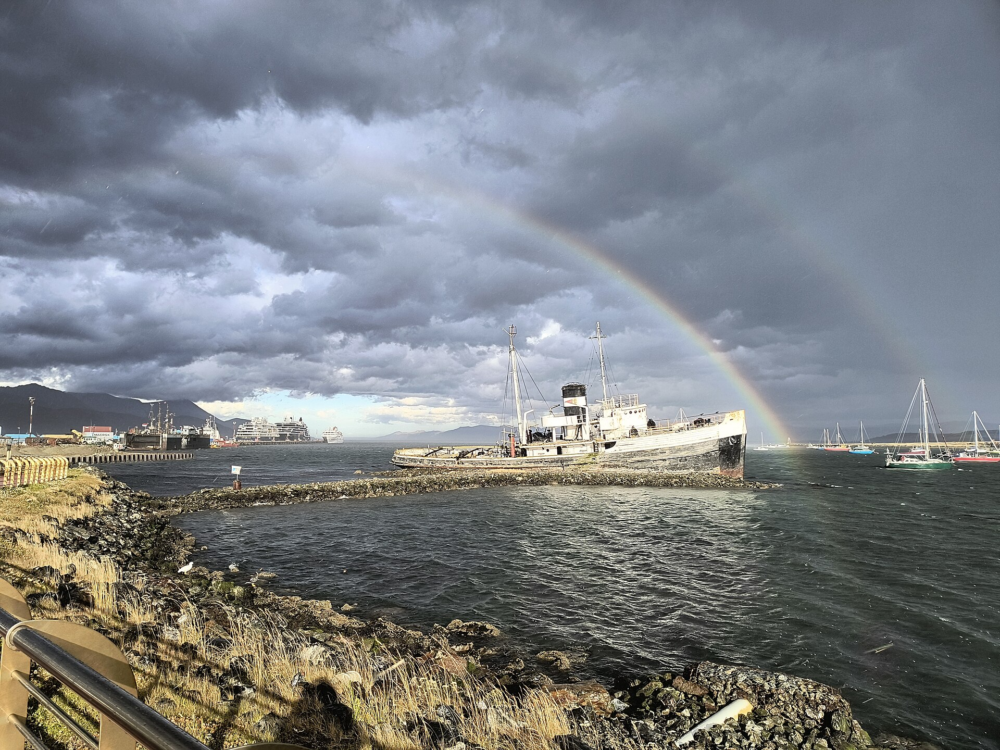

Argentina
Bariloche
El Nahuel Huapi, cerros nevados y chocolate artesanal. Una postal patagónica que combina aventura y calidez de refugio de montaña.
Cerros, lagos y aire fresco para quienes prefieren mirar el mundo desde arriba.
El Nahuel Huapi, cerros nevados y chocolate artesanal. Una postal patagónica que combina aventura y calidez de refugio de montaña.

La ciudad más austral del mundo, entre montañas nevadas, bosques fueguinos y el imponente Canal Beagle.

La Quebrada de Humahuaca, cerros de siete colores y valles calchaquíes envueltos en historia y viñedos de altura.